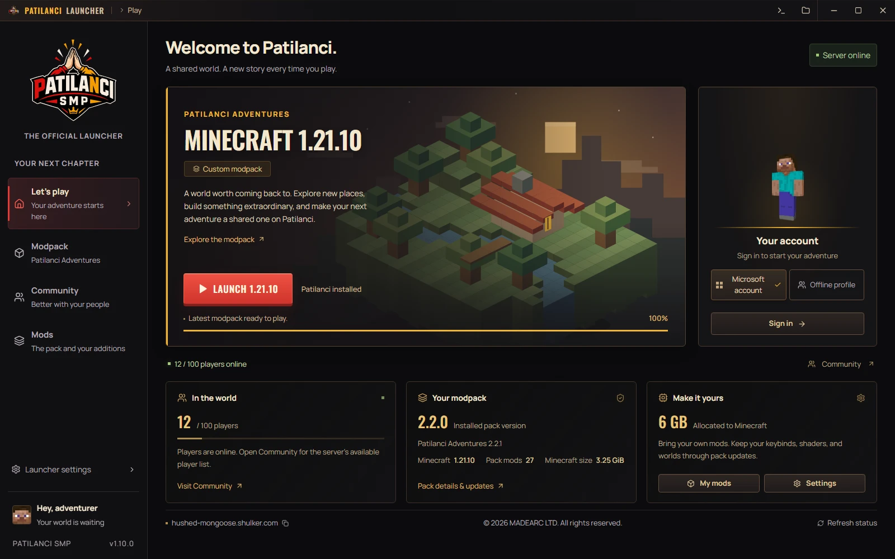

Нашият свят. Готов за теб.
Официалният модпак Patilanci Adventures с Fabric. Познатият Minecraft с още възможности за изследване и строене.

ПАТИЛАНЦИ LAUNCHERДобрите истории започват с „хайде да играем“.
Влез в света на Патиланци — ние се грижим за останалото.
Версии и файлове за изтегляне в GitHub Releases

ПО-МАЛКО НАСТРОЙКИ. ПОВЕЧЕ ИГРА.
От първото влизане до следващия голям строеж — всичко, което ти трябва, е на едно място.
Официалният модпак Patilanci Adventures с Fabric. Познатият Minecraft с още възможности за изследване и строене.
Автоматични обновления на модпака и управлявана Java. Твоите светове, настройки и добавени модове остават с теб.
Добави любимите си модове, избери колко памет да отделиш и настрой launcher-а според своя компютър.
ОТ „ХАЙДЕ“ ДО „В ИГРАТА СЪМ“
Отвори GitHub Releases и избери подходящия файл за твоя компютър.
Свържи Microsoft акаунта си от началния екран на launcher-а.
Launcher-ът подготвя модпака и необходимата Java преди старта.
ДОБРИ ХОРА. ГОЛЕМИ ПРИКЛЮЧЕНИЯ.
Твоето място в света на Патиланци те чака.
ИЗТЕГЛИ LAUNCHER-АВсички версии и бележки към изданията